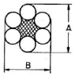

천장크레인운전기능사 (2009-09-27 기출문제)
1과목: 임의 구분
1. 천장크레인의 훅(Hook)이 지면에서 최고점(권상한도)에 이를 때 권과 방지용 리미트 스위치(cam-type)의 캠은 약 몇 회전 하는가?
- 1회전 미만
- 2회전
- 3회전
- 4회전 이상
(정답률: 43%)

2. 마스터 실린더와 관계있는 제동기의 종류는?
- 디스크 제동기
- 유압 압상 제동기
- 교류전자 제동기
- 직류전자 제동기
(정답률: 24%)
3. 드럼 홈의 지름은 와이어로프의 공칭지름보다 몇 % 크게 하는 것이 좋은가?
- 10
- 20
- 30
- 40
(정답률: 58%)
4. 천장크레인에서 브레이크의 조정 사항과 관련이 없는 것은?
- 스트로크 조정
- 슈 조정
- 라이닝 조정
- 플랜지 두께 조정
(정답률: 68%)
5. 천장크레인 차륜의 정기검사 시 주의할 점이 아닌 것은?
- 차륜의 플랜지가 레일에 잘 닿는지의 여부
- 주행 중 주기적으로 기체의 진동이나 소음이 발생하는지의 여부
- 차륜, 베어링 등의 마모는 양각 모두 동일하게 진행되는 지의 여부
- 권상드럼의 마모상태가 마모한도를 초과하였는지의 여부
(정답률: 34%)
6. 속도제어를 위해 사용되는 브레이크 중 구조가 간단하고 마모 부분이 없으며 저속도를 쉽게 얻을 수 있는 브레이크는?
- 직류 마그넷 브레이크
- E. C 브레이크 (와류 브레이크)
- 스러스트 브레이크
- 유압 브레이크
(정답률: 76%)
7. 천장크레인에서 정격하중의 의미로서 가장 올바른 것은?
- 천장크레인이 들어 올릴 수 있는 최대하중
- 평상시 주로 많이 취급하는 하중
- 달기기구의 자중을 제외한 순수 권상하중
- 달기기구의 자중을 포함한 취급하중
(정답률: 72%)
8. 크레인의 양정에 대한 의미로서 가장 알맞은 것은?
- 로프(rope)가 드럼에 감기는 거리
- 훅(hook)이 상하한 리미트 사이를 움직일 수 있는 수직거리
- 기중기의 트롤리(trolley)가 수평으로 움직일 수 있는 최대 거리
- 운전실 하면(下面)과 지상과의 거리
(정답률: 89%)
9. 천장크레인용 훅(Hook)의 입구가 벌어지는 변형량을 시험하는 방법으로 가장 적합한 것은?
- 훅에 정격하중을 동하중으로 작용시켜 입구의 벌어짐이 0.5% 이하이어야 한다.
- 훅에 정격하중의 2배를 정하중으로 작용시켜 입구의 벌어짐이 0.25% 이하이어야 한다.
- 훅에 최대하중을 동하중으로 작용시켜 입구의 벌어짐이 0.25% 이하이어야 한다.
- 훅에 정격하중을 정하중으로 작용시켜 입구의 벌어짐이 0.5% 이하이어야 한다.
(정답률: 67%)
10. 크레인의 과부하 방지장치용 시브 피치원 직경과 통과하는 와이어로프 지름의 비는 얼마 이상 이어야 하는가?
- 2 이상
- 3 이상
- 4 이상
- 5 이상
(정답률: 67%)
11. 버퍼 스토퍼(Buffer Stopper)에 대해 설명한 것으로 가장 올바르게 표현한 것은?
- 강판으로 접합하여 케이스를 만들고 충돌부위는 나무를 사용하여 충격의 부담을 덜어주는 스토퍼
- 새들(Saddle)의 차륜을 보호하기 위하여 씌운 덮개
- 거더(Girder)의 비틀림을 방지하기 위해 설치해 놓은 스토퍼
- 단단한 고무나 스프링 또는 유압을 이용하여 충돌시 충격을 완화시켜 주는 스토퍼
(정답률: 79%)
12. 크레인에 사용하는 과부하 방지장치의 안전점검 사항 중 틀린 것은?
- 과부하 방지장치가 동작할 때는 경보음이 작동되어야 한다.
- 관계책임자 이외는 임의로 조정할 수 없도록 납봉인 등이 되어 있어야 한다.
- 과부하 방지장치의 동작시 일정한 시간이 지나면 자동 복귀되어야 한다.
- 과부하 방지장치는 성능검정을 필 한 것이어야 한다.
(정답률: 92%)
13. 스팬이 24m인 공장작업용 천장크레인 거더의 캠버는?
- 50㎜
- 30㎜
- 10㎜
- 5㎜
(정답률: 45%)
14. 천장크레인의 주요 3가지 운동은?
- 주행, 횡행, 권상
- 주행, 횡행, 선회
- 인입, 횡행, 추출
- 주행, 그라브, 권상
(정답률: 95%)
15. 차륜의 플랜지 두께는 일반적으로 원래 두께의 몇 %가 마모 되면 교환하는가?
- 10%
- 20%
- 30%
- 50%
(정답률: 64%)
16. 천장크레인의 표시 중 40/20ton × 26m 용어의 해석이 맞는 것은?
- 주권 40톤, 보권 20톤, 스팬 26m
- 보권 40톤, 주권 20톤, 스팬 26m
- 주권 20톤~40톤, 스팬 26m
- 주권 0.5톤, 스팬 26m
(정답률: 81%)
17. 훅에 대한 설명으로 틀린 것은?
- 훅에 사용하는 재료는 기계구조용 탄소강을 쓴다.
- 매다는 하중이 50톤 이상인 것에서는 양쪽 현수훅이 사용된다.
- 훅의 안전계수는 5 이상 이다.
- 훅에 와이어로프가 걸리는 부분의 마모자국 깊이는 7%가 되면 교환하여야 한다.
(정답률: 78%)
18. 전자식 마그넷 브레이크(magnet brake)의 라이닝 두께가 25% 감소한 경우 가장 적합한 조치 방법은?
- 라이닝을 교환한다.
- 브레이크 드럼 지름을 크게 한다.
- 스트로크를 조정한다.
- 특별한 조치를 하지 않아도 된다.
(정답률: 70%)
19. 다음 중 천장크레인 권상장치의 주요 구성요소가 아닌 것은?
- 전동기
- 감속기
- 브레이크
- 캠버
(정답률: 54%)
20. 천장크레인의 주행레일 측면의 허용 마모한도는 원 치수의 얼마인가?
- 5% 이내
- 7% 이내
- 10% 이내
- 15% 이내
(정답률: 54%)
2과목: 임의 구분
21. 저항기 사용 중 온도가 높아졌을 때 그 허용 값은 얼마인가?
- 약 250 ℃
- 약 300 ℃
- 약 350 ℃
- 약 400 ℃
(정답률: 67%)
22. 다음 중 브러시를 사용하지 않는 전동기는?
- 직류 전동기
- 권선형 유도전동기
- 정류자 전동기
- 농형 유도전동기
(정답률: 53%)
23. 권상장치에 사용되는 기어의 마모한도로서 가장 적당한 것은? (단, 마모한도는 PITCH 원에서의 치두께의 감소를 말함)
- 원 치수의 20~30%
- 원 치수의 50~60%
- 원 치수의 5~6%
- 원 치수의 10~15%
(정답률: 37%)
24. 몇 가지 부품에 대하여 예비품을 두어야 하는 목적은?
- 운전 중 고장이 쉽게 발생되는 부품에 대하여 정비 시간을 단축시키기 위해
- 부품 값이 비싸며 운반할 때 불편하므로
- 형식을 갖추어 둘 필요가 있으므로
- 쉽게 구할 수 있는 부품이며 값이 싸므로
(정답률: 90%)
25. 천장크레인으로 부품을 들어 올릴 때 주로 사용하는 볼트는?
- 기초볼트
- 아이볼트
- T 볼트
- 스테이볼트
(정답률: 86%)
26. 천장크레인의 자동 도유장치는 일반적으로 어느 곳에 도유 하는가?
- 주행 차륜 축
- 주행 차륜 보스
- 주행 차륜 플랜지
- 주행 레일기어
(정답률: 74%)
27. 다음 키 중 전달하는 회전력(torque)이 제일 큰 키는?
- 접선 키
- 안장 키
- 둥근 키
- 납작 키
(정답률: 41%)
28. 다음 크레인 배선에 관한 것 중 틀린 것은?
- 배선의 피복 상태는 손상, 파손, 탄화 부분이 없을 것
- 배선의 단자 체결 부분은 전용 단자를 사용하고 볼트 및 너트의 풀림 또는 탈락이 없을 것
- 배선의 절연 저항은 대지전압 150V 초과 300V 이하인 경우 0.2㏁ 이상일 것
- 배선은 KSB 3064에 정해진 규격에 적합한 캡타이어 케이블 일 것
(정답률: 66%)
29. 천장크레인 작업에서 안전담당자의 임무가 아닌 것은?
- 작업방법과 근로자의 배치를 결정하고 작업을 지휘
- 재료의 결함 유무 또는 기구 및 공구의 기능을 점검 하고 불량품을 제거하는 일
- 작업 중 안전대와 안전모의 착용상황을 감시하는 일
- 작업을 지휘하는 자를 선임하여 그에 의하여 작업 실시 하도록 조치
(정답률: 69%)
30. 플레밍의 오른손 법칙에서 가운데(중지) 손가락 방향은?
- 자력선 방향
- 자밀도 방향
- 유도 기전력 방향
- 운동 방향
(정답률: 89%)
31. 레디얼 볼베어링 #6208의 안지름은 얼마인가?
- 24㎜
- 32㎜
- 40㎜
- 48㎜
(정답률: 44%)
32. 정기적으로 점검 교체하여야 하는 것은?
- 감속기
- 모터
- 판넬
- 브레이크 라이닝
(정답률: 60%)
33. 운전자 안전수칙을 설명한 것 중 틀린 것은?
- 운반물이 흔들리거나 회전하는 상태로 운반해서는 안 된다.
- 운반물은 작업자 상부로 운반할 수 없으며 직각운전을 원칙으로 한다.
- 운전석을 이석할 때는 크레인을 정지위치로 이동시킨 후 훅을 최대한 내려놓는다.
- 옥외 크레인은 강풍이 불어올 경우 운전 및 옥외 점검 정비를 제한한다.
(정답률: 65%)
34. 리모트 크레인의 팬던트 스위치(콘트롤러)를 사용하는 방식에는 주파수방식과 적외선방식이 있다. 이 두 가지 방식의 차이점 중 틀린 것은?
- 주파수방식은 운전자의 가시거리 내에 있어야 작동이 가능하다.
- 적외선방식은 주변의 정밀기기에 영향을 주지 않는다.
- 주파수방식은 안테나를 사용하므로 센서가 필요하지 않다.
- 적외선방식은 불필요한 신호에 의한 사고위험이 주파수방식보다 낮다.
(정답률: 39%)
35. 운전 시 집전장치에서 과대한 스파크가 발생할 때 점검해야 할 사항은?
- 집전자의 과대 마모에 의한 접촉 불량
- 전동기 회전수
- 브레이크 라이닝 간격
- 리미트 스위치
(정답률: 73%)
36. 전달 토크가 크며 부하변동에 대해서 안전한 반면 치면의 윤활이 어려운 것이 단점인 커플링은?
- 플렉시블
- 기어
- 유니버셜
- 플랜지
(정답률: 25%)
37. 전동장치에서 동력을 직접 전달하는 방식이 아닌 것은?
- 마찰에 의한 전동
- 기어에 의한 전동
- 원뿔차에 의한 전동
- 체인에 의한 전동
(정답률: 32%)
38. 크레인의 전기 기기에서 사용하는 절연에 관한 용어 중 'B종’ 절연의 허용 최고 온도는?
- 90℃
- 120℃
- 130℃
- 155℃
(정답률: 53%)
39. 전동기가 입력 20㎾로 운전하여 23HP의 동력을 발생하고 있을 때 전동기의 효율은? (단, 1HP는 746W 이다.)
- 64.8%
- 85.8%
- 87%
- 96%
(정답률: 40%)
40. 권상운전 중 갑자기 모터(motor)에서 이상한 잡음의 들릴 때 추정할 수 있는 원인으로 가장 적합한 것은?
- 마그넷 브레이크가 동작을 하지 않을 경우
- 스피드 컨트롤 브레이크가 풀리지 않을 경우
- 모터가 소손되었을 경우
- 리미트 스위치가 작동되지 않을 경우
(정답률: 20%)
3과목: 임의 구분
41. 그림에서 와이어로프의 직경을 가장 올바르게 측정한 것은?

- A
- B
- (A+B) / 2
- A, B 모두 같다.
(정답률: 64%)
42. 줄걸이용 와이어로프로 하중을 인양 작업 할 때 가장 바람직한 훅의 줄걸이 각도는 얼마 이내 인가?
- 60˚
- 90˚
- 120˚
- 150˚
(정답률: 78%)
43. 주먹을 머리에 대고 떼었다 붙였다 하며 호각을 '짧게, 길게' 부는 신호의 의미는?
- 물건 걸기
- 작업 완료
- 정지
- 주권 사용
(정답률: 92%)
44. 매다는 체인의 설명 중 틀린 것은?
- 장기 사용으로 연결 부분의 안쪽의 마모된다.
- 균열이 있을 경우에는 전기용접으로 보수하여 재사용하는 것이 좋다.
- 링크의 이음매가 벗겨질 수도 있으므로 유의 하여야 한다.
- 링크의 단면 직경이 제조시보다 10% 이상 감소한 것은 사용할 수 없다.
(정답률: 79%)
45. 줄걸이 작업을 가장 바르게 설명한 것은?
- 한 줄로 매달면 작업이 편리하다.
- 반걸이를 하여 작업의 능률을 높인다.
- 원칙적으로 눈걸이를 하여 짐을 매다는 것이 안전하다.
- 가는 와이어로프일 때는 어깨걸이를 한다.
(정답률: 70%)
46. 와이어의 양 끝을 고정하는 방법으로 틀린 것은?
- 소켓가공이라고도 하며 가공을 양호하게 하면 잔류 강도는 100%로 되는 것이 합금고정이다.
- 직경이 32㎜ 이상의 굵은 와이어로프는 합금고정이 양호하다.
- 합금고정의 소켓 재질은 주철제를 사용한다.
- 클립고정과 쐐기고정을 병용하여 고정하면 효과가 훨씬 높아진다.
(정답률: 17%)
47. 와이어로프에 관한 설명 중 틀린 것은?
- 랭 꼬임은 소선의 경사가 완만하여 외부와의 접촉면이 길다.
- 보통 꼬임은 스트랜드와 와이어로프의 꼬임 방향이 서로 반대이다.
- 보통 꼬임은 외부와 접촉 면적이 작아서 마모는 크지만 킹크 발생이 적고 취급이 용이하다.
- 랭 꼬임은 보통 꼬임에 비해서 손상도가 심해 장시간의 사용에 불리하다.
(정답률: 42%)
48. 가로 10m, 세로 1m, 높이 0.2m인 금속화물이 있다. 이것을 4줄 걸이 30도로 들어 올릴 때 한 개의 와이어에 걸리는 하중은 약 얼마인가? (단, 금속의 비중은 7.8이다.)
- 3.9톤
- 7.8톤
- 4.04톤
- 15.6톤
(정답률: 28%)
49. 와이어로프의 안전계수가 5이고 절단하중의 20000㎏f 일 때 안전하중은?
- 6000 ㎏f
- 5000 ㎏f
- 4000 ㎏f
- 2000 ㎏f
(정답률: 70%)
50. 권상용 드럼에 와이어로프가 감길 때 드럼직경(D)과 와이어 로프직경(d)의 비는 얼마 이상으로 해야 하는가?
- 20 이상
- 30 이상
- 40 이상
- 50 이상
(정답률: 70%)
51. 사고의 직접원인으로 가장 적합한 것은?
- 유전적인 요소
- 성격결함
- 사회적 환경요인
- 불안전한 행동 및 상태
(정답률: 100%)
52. 6각 볼트·너트를 조이고 풀 때 가장 적합한 공구는?
- 바이스
- 플라이어
- 드라이버
- 복스 렌치
(정답률: 85%)
53. 일반가연성 물질의 화재로서 물질이 연소 된 후에 재를 남기는 일반적인 화재는?
- A급 화재
- B급 화재
- C급 화재
- D급 화재
(정답률: 79%)
54. 아세틸렌가스 용기의 취급 방법 중 틀린 것은?
- 용기의 온도는 60℃로 유지 할 것
- 용기는 반드시 세워서 보관 할 것
- 전도, 전락 방지 조치를 할 것
- 충전용기와 빈 용기는 명확히 구분하여 각각 보관 할 것
(정답률: 63%)
55. 복스 렌치를 오픈엔드 렌치보다 많이 권장하여 사용하는 가장 적합한 이유는?
- 가볍다
- 값이 싸다
- 다양한 크기의 볼트와 너트에 사용할 수 있다.
- 볼트와 너트 주위를 완전히 감싸게 되어있어 사용 중에 미끄러지지 않는다.
(정답률: 78%)
56. 운반 작업 시 지켜야 할 사항으로 맞는 것은?
- 운반 작업은 장비를 사용하기보다 가능한 많은 인력을 동원하여 하는 것이 좋다.
- 인력으로 운반 시 무리한 자세로 장시간 취급하지 않도록 한다.
- 인력으로 운반 시 보조구를 사용하되 몸에서 멀리 떨어지게 하고, 가슴 위치에서 하중이 걸리게 한다.
- 통로 및 인도에 가까운 곳에서는 빠른 속도로 벗어나는 것이 좋다.
(정답률: 67%)
57. 적색 원형으로 만들어지는 안전 표지판은?
- 경고 표시
- 안내 표시
- 지시 표시
- 금지 표시
(정답률: 48%)
58. 장갑을 끼면 안전상 가장 적합하지 않은 작업은?
- 전기용접작업
- 해머작업
- 타이어 교환 작업
- 건설기계운전
(정답률: 79%)
59. 운반 및 하역 작업 시 착용복장 및 보호구로 적합하지 않는 것은?
- 상의 작업복의 소매는 손목에 밀착되는 작업복을 착용한다.
- 하의 작업복은 바지 끝 부분을 안전화 속에 넣거나 밀착되게 한다.
- 방독면, 방화 장갑을 항상 착용하여야 한다.
- 유해, 위험물을 취급 시 방호 할 수 있는 보호구를 착용 한다.
(정답률: 71%)
60. 감전재해 사고발생시 취해야 할 행동순서가 아닌 것은?
- 피해자가 지닌 금속체가 전선 등에 접촉되었는가를 확인 한다.
- 설비의 전기 공급원 스위치를 내린다.
- 전원을 끄지 못했을 때는 고무장갑이나 고무장화를 착용하고 피해자를 구출한다.
- 피해자 구출 후 상태가 심할 경우 인공호흡 등 응급조치를 한 후 작업에 임하도록 한다.
(정답률: 48%)